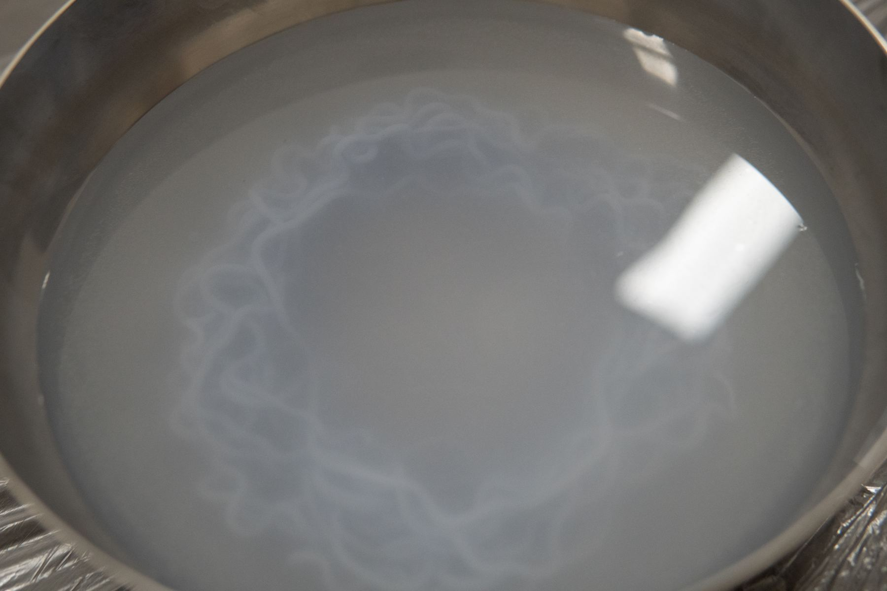

Approach & Methodology
How we investigate matter.
The material is not a passive resource. It answers: to water, to time, to the gesture.
Research principles
Five principles
- 01Research through design
- 02Material agency
- 03Observation
- 04Experimentation
- 05Iteration
One short paragraph each, to write with Emi.
Experimental parameters
What changes the result
Water
Time
Humidity
Salinity
Temperature
Process
From mixture to record
FormulationExperimentationObservationDocumentation
Visual documentation
In the studio
